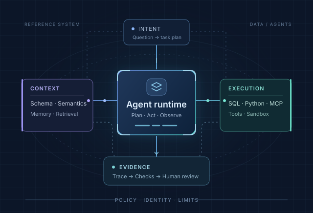

THE DATA AGENT FIELD GUIDE 2026
Data Agents.从理解，到可靠行动。
连接业务语义、执行系统与验证证据。
沿着架构、项目与公开分享，找到你的下一步。
ANATOMY OF A DATA AGENT FIG. 01

01 / EXPLORE THE ATLAS
从资料，走向工程判断.
工程主题
资料可跨主题，支持交叉筛选/
全部资料
从机制、实现到验证，沿原始资料建立工程判断。
- 正在载入资料地图…
02 / FOLLOW A READING PATH
带着问题，读完一条路线.
01 / BUILD
搭建一个分析 Agent
从中文实现出发，串起知识配置、SQL、Python 与报告交付。
Spring AI Alibaba · DB-GPT
02 / CONNECT 接入现有工具与平台
沿 Skills、MCP 和云端授权，读懂接入方式与身份边界。
Data Agent Kit · dbt MCP
03 / GROUND 让业务定义进入计算
比较语义建模、目录上下文、查询规划与证据对账。
WrenAI · DataHub · Semantic Layer
04 / VERIFY 把演示变成可靠交付
从实录与讲义提取检查项，看清失败、审批与验收条件。
公开分享 · Evals · 设计评审
03 / SEE THE WHOLE SYSTEM
把知识、行动与证据连起来.

本仓编辑归纳的工程参考图。Verified 指通过所配置的检查并附有证据；证据不足时应澄清、修复或升级。